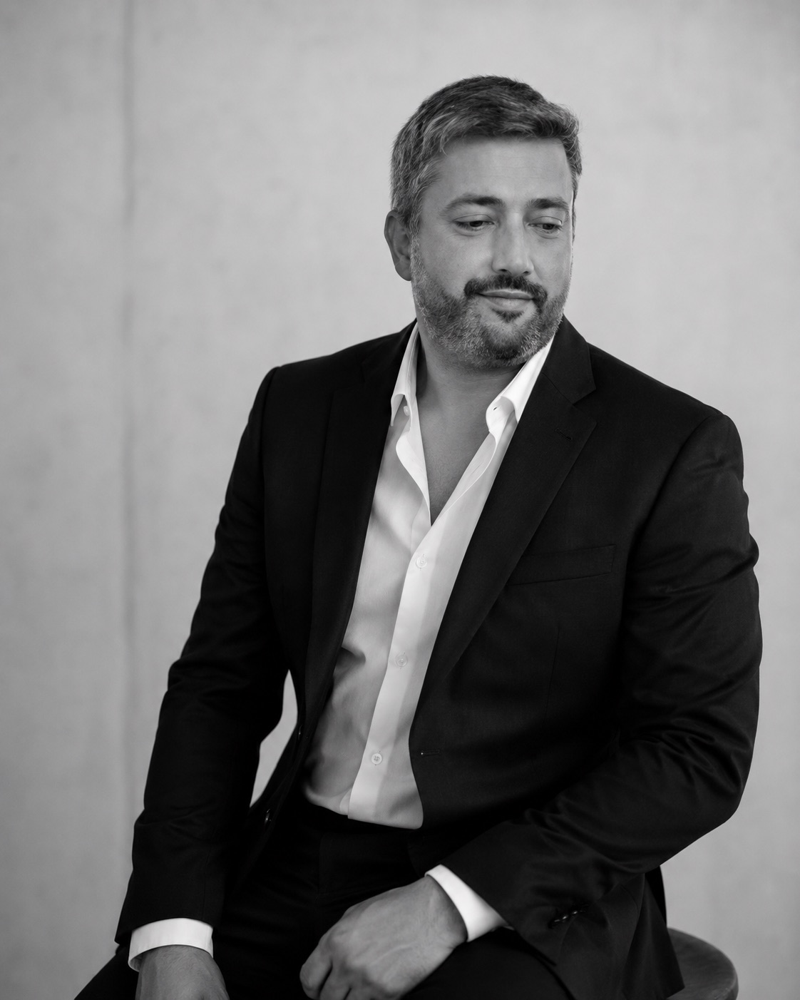

"Entré pensando que ya sabía usar Claude y me di cuenta de que estaba en pañales. La diferencia entre antes y después es vergonzosa, en el buen sentido."
M
María José R.
Consultora de comunicaciones
¿Cuánto tiempo perdiste esta semana pidiéndole lo mismo a Claude tres veces?
La mayoría usa Claude como un buscador con mejor redacción. En 3 sesiones aprendes a usarlo como profesional.
★ 5.0 · 3 ediciones previas · 11 profesionales formados
Seis capacidades concretas que vas a poder aplicar desde el día siguiente.
Técnicas reales de prompt engineering que eliminan el ensayo y error: Claude entiende exactamente lo que necesitas.
Crearás tus propios artefactos e instalarás skills para que Claude haga más, sin reexplicar nada cada vez.
Configurarás proyectos, tonos y estilos para que las respuestas suenen como tú, no como una IA genérica.
Saldrás con un proyecto propio terminado y un sistema aplicable desde el día siguiente.
Sabrás cuándo usar Sonnet, Opus o Haiku: sin gastar tokens de más y eligiendo el agente para cada tarea.
Entenderás qué es Claude Code y los servidores MCP, con una introducción práctica para saber hacia dónde seguir.
2 cupos disponibles en esta edición. Precio de lanzamiento termina pronto.

CTO Fraccional · Implementador de Software · Consultor en IA
Rodrigo Pinto ayuda a empresas y profesionales a implementar Inteligencia Artificial e Inteligencia Agéntica para aumentar productividad, optimizar procesos y acelerar resultados de negocio.
Como CTO fraccional, diseña e implementa soluciones tecnológicas que convierten desafíos operativos en sistemas escalables, automatizados y orientados al crecimiento.
Especialidades: IA Generativa, Inteligencia Agéntica, Automatización, Transformación Digital, Implementación de Software y Productividad Empresarial.
"Entré pensando que ya sabía usar Claude y me di cuenta de que estaba en pañales. La diferencia entre antes y después es vergonzosa, en el buen sentido."
"Lo mejor fue que trabajamos con mis casos reales, no con ejemplos de juguete. Salí con cosas que usé al día siguiente en mi pega."
"Ser solo cuatro cambia todo. Rodrigo te mira la pantalla, te corrige el prompt en vivo. Eso no lo encuentras en un curso grabado de internet."
Cada sesión construye sobre la anterior. Primero entiendes el ecosistema, luego practicas con tus propios casos, y al final presentas lo que creaste.
No se requieren conocimientos técnicos. Solo un computador y ganas de aplicar lo que aprendes.
No. Solo necesitas un computador y tu cuenta de Claude. Te la creamos juntos en la primera sesión. Reserva tu cupo →
Las fechas se coordinan con el grupo — entre 4 personas siempre encontramos horario. Si un día no puedes, lo resolvemos directamente con Rodrigo. Quiero mi lugar →
La sesión online sí queda grabada para ti. Las presenciales no, porque el valor está en mirarte la pantalla y corregir el prompt en vivo. Por eso el grupo es de solo 4. Sumarme al curso →
Empiezas con la versión gratuita. Para sacarle todo el jugo a Artefactos y Skills se recomienda Pro — lo evaluamos juntos en la sesión 1 según tu uso real. Inscribirme →
Todo: 3 sesiones, material, guías, templates y acompañamiento directo de Rodrigo. Sin costos ocultos. Ver precio y reservar →
CTO Fraccional, Implementador de Software y Consultor en IA en Santiago. Lleva 3 ediciones formando profesionales. Te enseña con casos reales, no con teoría. Conocer al instructor →
IA Generativa, Inteligencia Agéntica, Automatización, Transformación Digital, Software. Enfoque práctico, orientado a ROI. Reservar mi cupo →
Un CTO que trabaja por proyecto u horas en lugar de ser contratado full-time. Rodrigo lo ejerce como consultor — y esa mentalidad práctica se refleja en el curso. Inscribirme →
Santiago, Chile. 2 sesiones presenciales + 1 online. Idioma: español de Chile. Material y soporte en español. Quiero sumarme →
Valor regular: $150.000 CLP
$120.000
CLP por persona · precio de lanzamiento
Ahorras $30.000 (20%) · precio vuelve a $150.000 al llenarse el grupo
¡Listo, te esperamos!
Rodrigo te contactará pronto a tu correo para confirmar tu lugar y coordinar las fechas.
Este curso es el punto de partida. Quienes terminan pueden continuar con niveles avanzados orientados a uso profesional profundo.
Pregunta por los niveles avanzados al inscribirte. Cupos también limitados.